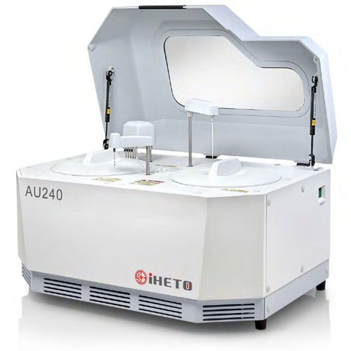

AU240 Chemistry Analyzer
Deskripsi Singkat
Analyzer kimia otomatis dengan throughput tinggi (240 tes/jam), cocok untuk laboratorium klinik dan rumah sakit.
Spesifikasi Teknis
| Kategori | Random access, fully automatic chemistry analyzer |
| Throughput | 90 tes/jam |
| Metodologi | End point, Fixed Time, Kinetic |
| Sample Volume | 2-50µL, step 0.1µL |
| Carryover | < 0.01% |
| Reaction Temp. | 37.0 ± 0.3°C |
| Wavelength | 8 (340, 405, 450, 510, 546, 578, 630, 670nm) |
| Resolution | 0.0001 Abs |
| Dimensi | 500 × 640 × 560 mm |
| Berat | 30 kg |
*Untuk informasi lengkap, silakan hubungi tim kami atau unduh katalog resmi.